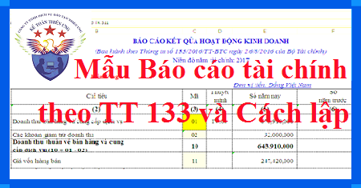

Mẫu Báo cáo tài chính theo Thông tư 133 mới nhất, Hướng dẫn cách làm Báo cáo tài chính theo Thông tư 133 gồm: Báo cáo tình hình tài chính, kết quả hoạt động kinh doanh, thuyết minh Báo cáo tài chính, lưu chuyển tiền tệ.
I. Bộ Báo cáo tài chính theo Thông tư 133 gồm các Mẫu sau:
1. Hệ thống báo cáo tài chính cho DN nhỏ và vừa đáp ứng giả định hoạt động liên tục bao gồm:
a) Một bộ Báo cáo Tài chính bắt buộc gồm:
| - Báo cáo tình hình tài chính | Mẫu số B01a - DNN |
| - Báo cáo kết quả hoạt động kinh doanh | Mẫu số B02 - DNN |
| - Bản thuyết minh Báo cáo tài chính | Mẫu số B09 – DNN |
| - Bảng cân đối tài khoản | Mẫu số F01 - DNN |
-> Cách lập Báo cáo Tài chính chi tiết: => Các bạn muốn xem Cách lập Mẫu báo cáo nào -> Thì các bạn bấm chuột trái vào Mẫu báo cáo đó để xem chi tiết nhé.
Chú ý:
- Tùy theo đặc điểm hoạt động và yêu cầu quản lý, DN có thể lựa chọn lập Báo cáo tình hình tài chính theo Mẫu B01b - DNN hoặc Mẫu số B01a - DNN.
- Báo cáo tình hình tài chính Mẫu B01a-DNN: Tài sản và nợ phải trả trên Báo cáo tình hình tài chính được trình bày theo tính thanh khoản giảm dần.
- Báo cáo tình hình tài chính Mẫu B01b-DNN: Tài sản và nợ phải trả trên Báo cáo tình hình tài chính được trình bày thành ngắn hạn và dài hạn.
=> Thường các DN sẽ chọn Mẫu B01a-DNN.
-> Nếu năm trước DN bạn đã nộp mẫu nào thì năm nay phải nộp theo mẫu đó (VD: Năm 2019 DN bạn nộp Mẫu 01a thì năm 2020 các bạn phải nộp Mẫu 01a, nếu thay đổi sang 01b thì phải Thông báo với Cơ quan thuế.)
b) Báo cáo không bắt buộc mà khuyến khích lập:
| - Báo cáo lưu chuyển tiền tệ | Mẫu số B03 - DNN |
----------------------------------------------------------------------------
a) Báo cáo bắt buộc:
| - Báo cáo tình hình tài chính | Mẫu số B01 - DNNKLT |
| - Báo cáo kết quả hoạt động kinh doanh | Mẫu số B02 - DNN |
| - Bản thuyết minh Báo cáo tài chính | Mẫu số B09 - DNNKLT |
b) Báo cáo không bắt buộc mà khuyến khích lập:
| - Báo cáo lưu chuyển tiền tệ | Mẫu số B03 - DNN |
| - Báo cáo tình hình tài chính | Mẫu số B01 - DNSN |
| - Báo cáo kết quả hoạt động kinh doanh | Mẫu số B02 - DNSN |
| - Bản thuyết minh Báo cáo tài chính | Mẫu số B09 - DNSN |
-----------------------------------------------------------------------------------------
- Khi lập báo cáo tài chính, các DN phải tuân thủ biểu mẫu báo cáo tài chính theo quy định.
- DN có thể sửa đổi, bổ sung báo cáo tài chính cho phù hợp với từng lĩnh vực hoạt động và yêu cầu quản lý của DN nhưng phải được Bộ Tài chính chấp thuận bằng văn bản trước khi thực hiện.
- Riêng Báo cáo tình hình tài chính của doanh nghiệp siêu nhỏ được trình bày theo tính thanh khoản giảm dần.
------------------------------------------------------------------------
- Tất cả các DN nhỏ và vừa phải lập và gửi báo cáo tài chính năm chậm nhất là 90 ngày kể từ ngày kết thúc năm tài chính cho các cơ quan có liên quan theo quy định.
- Nơi nhận báo cáo tài chính năm được quy định như sau:
+ Các doanh nghiệp nộp báo cáo tài chính năm cho cơ quan thuế, cơ quan đăng ký kinh doanh và cơ quan Thống kê.
+ Các doanh nghiệp (kể cả các doanh nghiệp trong nước và doanh nghiệp có vốn đầu tư nước ngoài) có trụ sở nằm trong khu chế xuất, khu công nghiệp, khu công nghệ cao thì ngoài việc nộp Báo cáo tài chính năm cho các cơ quan theo quy định (Cơ quan thuế, cơ quan đăng ký kinh doanh, cơ quan thống kê) còn phải nộp Báo cáo tài chính năm cho Ban quản lý khu chế xuất, khu công nghiệp, khu công nghệ cao nếu được yêu cầu.
---------------------------------------------------------------------
II. Quy định về Báo cáo tài chính theo Thông tư 133:
1. Mục đích Lập báo cáo tài chính:
- Báo cáo tài chính dùng để cung cấp thông tin về tình hình tài chính, tình hình kinh doanh và các luồng tiền của một doanh nghiệp, đáp ứng yêu cầu quản lý của chủ doanh nghiệp, cơ quan Nhà nước và nhu cầu hữu ích của những người sử dụng trong việc đưa ra các quyết định kinh tế. Báo cáo tài chính phải cung cấp những thông tin của một doanh nghiệp về:
+ Tài sản;
+ Nợ phải trả;
+ Vốn chủ sở hữu;
+ Doanh thu, thu nhập khác, chi phí sản xuất kinh doanh và chi phí khác;
+ Lãi, lỗ và phân chia kết quả kinh doanh.
Trong Báo cáo tài chính năm, doanh nghiệp phải trình bày các thông tin chung sau:
- Tên và địa chỉ của doanh nghiệp;
- Ngày kết thúc kỳ kế toán;
- Ngày lập báo cáo tài chính;
- Đơn vị tiền tệ dùng để ghi sổ kế toán;
- Đơn vị tiền tệ dùng để lập và trình bày báo cáo tài chính.
- Ngoài các thông tin này, DN còn phải cung cấp các thông tin khác trong “Bản thuyết minh Báo cáo tài chính” nhằm giải trình thêm về các chỉ tiêu đã phản ánh trên các Báo cáo tài chính và các chính sách kế toán đã áp dụng để ghi nhận các nghiệp vụ kinh tế phát sinh, lập và trình bày Báo cáo tài chính.
- Đối tượng lập Báo cáo tài chính năm áp dụng cho tất cả các loại hình DN có quy mô nhỏ và vừa thuộc mọi lĩnh vực, mọi thành phần kinh tế trong cả nước.
- Việc ký Báo cáo tài chính phải thực hiện theo quy định của Luật Kế toán.
- Nếu DN không tự lập Báo cáo tài chính mà thuê đơn vị kinh doanh dịch vụ kế toán lập Báo cáo tài chính, người hành nghề thuộc các đơn vị kinh doanh dịch vụ kế toán phải ký và ghi rõ số giấy chứng nhận đăng ký hành nghề dịch vụ kế toán, tên đơn vị kinh doanh dịch vụ kế toán trên báo cáo tài chính của đơn vị.
3.1. Báo cáo tài chính phải phản ánh đúng bản chất kinh tế của các giao dịch và sự kiện hơn là hình thức pháp lý của các giao dịch và sự kiện đó (tôn trọng bản chất hơn hình thức).
3.2. Tài sản không được ghi nhận cao hơn giá trị có thể thu hồi; Nợ phải trả không được ghi nhận thấp hơn nghĩa vụ phải thanh toán.
3.3. Phân loại tài sản và nợ phải trả: Tài sản và nợ phải trả trên Báo cáo tình hình tài chính được trình bày theo tính thanh khoản giảm dần hoặc trình bày thành ngắn hạn và dài hạn. Riêng Báo cáo tình hình tài chính của doanh nghiệp siêu nhỏ được trình bày theo tính thanh khoản giảm dần.
3.4. Trường hợp Báo cáo tình hình tài chính trình bày thành ngắn hạn và dài hạn:
Trên Báo cáo tình hình tài chính, các khoản mục Tài sản và Nợ phải trả phải được trình bày riêng biệt thành ngắn hạn và dài hạn, tùy theo thời hạn của chu kỳ kinh doanh thông thường của doanh nghiệp, cụ thể như sau:
a) Đối với doanh nghiệp có chu kỳ kinh doanh thông thường trong vòng 12 tháng, thì Tài sản và Nợ phải trả được phân thành ngắn hạn và dài hạn theo nguyên tắc sau:
- Tài sản và Nợ phải trả được thu hồi hay thanh toán trong vòng không quá 12 tháng tới kể từ thời điểm báo cáo được xếp vào loại ngắn hạn;
- Tài sản và Nợ phải trả được thu hồi hay thanh toán từ 12 tháng trở lên kể từ thời điểm báo cáo được xếp vào loại dài hạn.
b) Đối với doanh nghiệp có chu kỳ kinh doanh thông thường dài hơn 12 tháng thì Tài sản và Nợ phải trả được phân thành ngắn hạn và dài hạn theo điều kiện sau:
- Tài sản và Nợ phải trả được thu hồi hay thanh toán trong vòng một chu kỳ kinh doanh bình thường được xếp vào loại ngắn hạn;
- Tài sản và Nợ phải trả được thu hồi hay thanh toán trong thời gian dài hơn một chu kỳ kinh doanh thông thường được xếp vào loại dài hạn.
Trường hợp này, doanh nghiệp phải thuyết minh rõ đặc điểm xác định chu kỳ kinh doanh thông thường, thời gian bình quân của chu kỳ kinh doanh thông thường, các bằng chứng về chu kỳ sản xuất, kinh doanh của doanh nghiệp cũng như của ngành, lĩnh vực mà doanh nghiệp hoạt động.
c) Đối với các doanh nghiệp do tính chất hoạt động không thể dựa vào chu kỳ kinh doanh để phân biệt giữa ngắn hạn và dài hạn, thì các Tài sản và Nợ phải trả được trình bày như điểm a mục này.
3.5. Tài sản và nợ phải trả phải được trình bày riêng biệt. Chỉ thực hiện bù trừ khi tài sản và nợ phải trả liên quan đến cùng một đối tượng, phát sinh từ các giao dịch và sự kiện cùng loại.
3.6. Các khoản mục doanh thu, thu nhập, chi phí phải được trình bày theo nguyên tắc phù hợp và đảm bảo nguyên tắc thận trọng. Báo cáo kết quả hoạt động kinh doanh và Báo cáo lưu chuyển tiền tệ phản ánh các khoản mục doanh thu, thu nhập, chi phí và luồng tiền của kỳ báo cáo. Các khoản doanh thu, thu nhập, chi phí của các kỳ trước có sai sót làm ảnh hưởng trọng yếu đến kết quả kinh doanh và lưu chuyển tiền phải được điều chỉnh hồi tố bằng cách báo cáo lại trên cột thông tin so sánh, không điều chỉnh vào kỳ báo cáo. Riêng doanh nghiệp siêu nhỏ được điều chỉnh sai sót của các kỳ trước vào kỳ phát hiện sai sót.
4.1. Khi lập và trình bày Báo cáo tài chính, doanh nghiệp phải xem xét giả định về sự hoạt động liên tục. Doanh nghiệp bị coi là không hoạt động liên tục nếu hết thời hạn hoạt động mà không có hồ sơ xin gia hạn hoạt động, bị giải thể, phá sản, chấm dứt hoạt động (phải có văn bản cụ thể gửi cơ quan có thẩm quyền) trong vòng không quá 12 tháng kể từ thời điểm lập Báo cáo tài chính. Đối với doanh nghiệp có chu kỳ sản xuất, kinh doanh thông thường hơn 12 tháng thì không quá một chu kỳ sản xuất kinh doanh thông thường.
4.2. Trong một số trường hợp sau doanh nghiệp vẫn được coi là hoạt động liên tục:
- Việc thay đổi hình thức sở hữu doanh nghiệp, thay đổi loại hình doanh nghiệp, ví dụ chuyển một công ty TNHH thành công ty cổ phần hoặc ngược lại;
- Việc chuyển một đơn vị có tư cách pháp nhân hạch toán độc lập thành một đơn vị không có tư cách pháp nhân hạch toán phụ thuộc hoặc ngược lại (ví dụ chuyển một công ty con thành một chi nhánh hoặc ngược lại) vẫn được coi là hoạt động liên tục.
4.3. Khi không đáp ứng giả định hoạt động liên tục, doanh nghiệp vẫn phải trình bày đủ các Báo cáo tài chính và ghi rõ là:
- Báo cáo tình hình tài chính áp dụng cho doanh nghiệp không đáp ứng giả định hoạt động liên tục và được trình bày theo Mẫu B01 - DNNKLT;
- Báo cáo kết quả hoạt động kinh doanh, Báo cáo lưu chuyển tiền tệ được trình bày theo mẫu B02 - DNN và B03 - DNN đáp ứng giả định hoạt động liên tục;
- Thuyết minh Báo cáo tài chính áp dụng cho doanh nghiệp không đáp ứng giả định hoạt động liên tục và được trình bày theo Mẫu B09 - DNNKLT.
4.4. Trường hợp giả định về sự hoạt động liên tục không còn phù hợp tại thời điểm báo cáo, doanh nghiệp không phải phân loại tài sản và nợ phải trả thành ngắn hạn và dài hạn mà trình bày theo tính thanh khoản giảm dần.
4.5. Trường hợp giả định về sự hoạt động liên tục không còn phù hợp tại thời điểm báo cáo, doanh nghiệp phải đánh giá lại toàn bộ tài sản và nợ phải trả trừ trường hợp có một bên thứ ba kế thừa quyền đối với tài sản hoặc nghĩa vụ đối với nợ phải trả theo giá trị sổ sách. Doanh nghiệp phải ghi nhận vào sổ kế toán theo giá đánh giá lại trước khi lập Báo cáo tình hình tài chính.
4.5.1. Doanh nghiệp không phải đánh giá lại tài sản, nợ phải trả nếu bên thứ ba kế thừa quyền đối với tài sản hoặc nghĩa vụ đối với nợ phải trả trong một số trường hợp cụ thể như sau:
a) Trường hợp một đơn vị sáp nhập vào đơn vị khác, nếu đơn vị nhận sáp nhập cam kết kế thừa mọi quyền và nghĩa vụ của đơn vị bị sáp nhập theo giá trị sổ sách;
b) Trường hợp một đơn vị chia thành các đơn vị khác, nếu đơn vị sau khi chia cam kết kế thừa mọi quyền và nghĩa vụ của đơn vị bị chia theo giá trị sổ sách;
c) Từng khoản mục tài sản cụ thể được một bên khác cam kết, bảo lãnh thu hồi cho đơn vị bị giải thể theo giá trị sổ sách và việc thu hồi diễn ra trước thời điểm đơn vị chính thức ngừng hoạt động;
d) Từng khoản mục nợ phải trả cụ thể được một bên thứ ba cam kết, bảo lãnh thanh toán cho đơn vị bị giải thể và đơn vị bị giải thể chỉ có nghĩa vụ thanh toán lại cho bên thứ ba đó theo giá trị sổ sách;
4.5.2. Việc đánh giá lại được thực hiện đối với từng loại tài sản và nợ phải trả theo nguyên tắc:
(a) Đối với tài sản:
- Hàng tồn kho được đánh giá theo giá thấp hơn giữa giá gốc và giá trị thuần có thể thực hiện được tại thời điểm báo cáo;
- TSCĐ hữu hình, TSCĐ vô hình, bất động sản đầu tư được đánh giá theo giá thấp hơn giữa giá trị còn lại và giá trị có thể thu hồi tại thời điểm báo cáo (là giá thanh lý trừ các chi phí thanh lý ước tính). Đối với TSCĐ thuê tài chính nếu có điều khoản bắt buộc phải mua lại thì đánh giá lại tương tự như TSCĐ của doanh nghiệp, nếu được trả lại cho bên cho thuê thì đánh giá lại theo số nợ thuê tài chính còn phải trả cho bên cho thuê;
- Chi phí xây dựng cơ bản dở dang được đánh giá theo giá thấp hơn giữa giá trị ghi sổ và giá trị có thể thu hồi tại thời điểm báo cáo (là giá thanh lý trừ chi phí thanh lý ước tính);
- Chứng khoán kinh doanh được đánh giá theo giá trị hợp lý. Giá trị hợp lý của chứng khoán niêm yết hoặc chứng khoán trên sàn UPCOM được xác định là giá đóng cửa của phiên giao dịch tại ngày báo cáo (hoặc phiên trước liền kề nếu thị trường không giao dịch vào ngày báo cáo);
- Các khoản đầu tư, góp vốn vào đơn vị khác được ghi nhận theo giá thấp hơn giữa giá trị ghi sổ và giá trị có thể thu hồi tại thời điểm báo cáo (giá có thể bán trừ chi phí bán ước tính);
- Các khoản đầu tư nắm giữ đến ngày đáo hạn, các khoản phải thu được đánh giá theo số thực tế có thể thu hồi.
b) Đối với nợ phải trả: Trường hợp có sự thỏa thuận giữa các bên bằng văn bản về số phải trả thì đánh giá lại theo số thỏa thuận. Trường hợp không có thỏa thuận cụ thể thực hiện như sau:
- Nợ phải trả bằng tiền được đánh giá lại theo giá cao hơn giữa giá trị ghi sổ khoản nợ phải trả và giá trị khoản nợ trả trước thời hạn theo quy định của hợp đồng;
- Nợ phải trả bằng tài sản tài chính được đánh giá lại theo giá cao hơn giữa giá trị ghi sổ của khoản nợ phải trả và giá trị hợp lý của tài sản tài chính đó tại thời điểm báo cáo;
- Nợ phải trả bằng hàng tồn kho được đánh giá lại theo giá cao hơn giữa giá trị ghi sổ khoản nợ phải trả và giá mua (cộng các chi phí liên quan trực tiếp) hoặc giá thành sản xuất hàng tồn kho tại thời điểm báo cáo;
- Nợ phải trả bằng TSCĐ được đánh giá lại theo giá cao hơn giữa giá trị ghi sổ nợ phải trả và giá mua (cộng các chi phí liên quan trực tiếp) hoặc giá trị còn lại của TSCĐ tại thời điểm báo cáo.
c) Các khoản mục tiền tệ có gốc ngoại tệ được đánh giá lại theo tỷ giá chuyển khoản trung bình cuối kỳ của ngân hàng thương mại nơi doanh nghiệp thường xuyên có giao dịch tại thời điểm báo cáo như doanh nghiệp đáp ứng giả định hoạt động liên tục.
4. 6. Phương pháp kế toán một số khoản mục tài sản khi doanh nghiệp không đáp ứng giả định hoạt động liên tục:
a) Việc trích lập dự phòng hoặc đánh giá tổn thất tài sản được ghi giảm trực tiếp vào giá trị ghi sổ của tài sản, không thực hiện trích lập dự phòng trên TK 229 - “Dự phòng tổn thất tài sản”;
b) Việc tính khấu hao hoặc ghi nhận tổn thất của TSCĐ, Bất động sản đầu tư được ghi giảm trực tiếp vào giá trị ghi sổ của tài sản, không sử dụng TK 214 để phản ánh hao mòn lũy kế.
4. 7. Khi giả định hoạt động liên tục không còn phù hợp, doanh nghiệp phải xử lý một số vấn đề tài chính sau:
- Thực hiện trích trước vào chi phí để xác định kết quả kinh doanh đối với các khoản lỗ dự kiến phát sinh trong tương lai nếu khả năng phát sinh khoản lỗ là tương đối chắc chắn và giá trị khoản lỗ được ước tính một cách đáng tin cậy; Ghi nhận nghĩa vụ hiện tại đối với các khoản phải trả kể cả trong trường hợp chưa có đầy đủ hồ sơ tài liệu (như biên bản nghiệm thu khối lượng của nhà thầu..) nhưng chắc chắn phải thanh toán;
- Đối với khoản chênh lệch tỷ giá hối đoái đang phản ánh lũy kế trên Báo cáo tình hình tài chính (như chênh lệch tỷ giá phát sinh từ việc chuyển đổi báo cáo tài chính sang Đồng Việt Nam), doanh nghiệp kết chuyển toàn bộ vào doanh thu hoạt động tài chính (nếu lãi) hoặc chi phí tài chính (nếu lỗ);
- Các khoản chi phí trả trước chưa phân bổ hết như lợi thế thương mại phát sinh từ hợp nhất kinh doanh không dẫn đến quan hệ công ty mẹ - công ty con, công cụ dụng cụ xuất dùng, chi phí thành lập doanh nghiệp, chi phí trong giai đoạn triển khai… được ghi giảm toàn bộ để tính vào chi phí trong kỳ. Riêng chi phí trả trước liên quan đến việc thuê tài sản, trả trước lãi vay được tính toán và phân bổ để phù hợp với thời gian trả trước thực tế còn lại cho đến khi chính thức dừng hoạt động;
- Các khoản chênh lệch lãi, lỗ khi đánh giá lại tài sản và nợ phải trả sau khi bù trừ với số dự phòng đã trích lập (nếu có) được ghi nhận vào doanh thu hoạt động tài chính, thu nhập khác hoặc chi phí tài chính, chi phí khác tùy từng khoản mục cụ thể tương tự như việc ghi nhận của doanh nghiệp đáp ứng giả định hoạt động liên tục.
4. 8. Trường hợp giả định về sự hoạt động liên tục không còn phù hợp tại thời điểm báo cáo, doanh nghiệp phải thuyết minh chi tiết về khả năng tạo tiền và thanh toán nợ phải trả, vốn chủ sở hữu cho các cổ đông và giải thích lý do về sự không so sánh được giữa thông tin của kỳ báo cáo và thông tin kỳ so sánh, cụ thể:
- Số tiền có khả năng thu hồi từ việc thanh lý, nhượng bán tài sản, thu hồi nợ phải thu;
- Khả năng thanh toán nợ phải trả theo thứ tự ưu tiên, như khả năng trả nợ ngân sách Nhà nước, trả nợ người lao động, trả nợ vay, nợ nhà cung cấp;
- Khả năng thanh toán cho chủ sở hữu, đối với công ty cổ phần cần công bố rõ khả năng mỗi cổ phiếu sẽ nhận được bao nhiêu tiền;
- Thời gian tiến hành thanh toán các khoản nợ phải trả và vốn chủ sở hữu.
- Lý do không so sánh được thông tin kỳ báo cáo và kỳ so sánh: Do kỳ trước doanh nghiệp trình bày Báo cáo tài chính dựa trên nguyên tắc doanh nghiệp đáp ứng giả định hoạt động liên tục. Do doanh nghiệp chuẩn bị giải thể, phá sản, chấm dứt hoạt động theo quyết định của cơ quan có thẩm quyền (ghi rõ tên cơ quan, số quyết định) hoặc do Ban giám đốc có dự định theo văn bản (số, ngày, tháng, năm) nên Báo cáo tài chính trong kỳ báo cáo được trình bày theo nguyên tắc kế toán khác (không đáp ứng giả định hoạt động liên tục).
5.1. Khi chuyển đổi loại hình hoặc hình thức sở hữu doanh nghiệp
- Khi chuyển đổi hình thức sở hữu, chuyển đổi loại hình doanh nghiệp phải tiến hành khóa sổ kế toán, lập Báo cáo tài chính theo quy định của pháp luật. Trong kỳ kế toán đầu tiên sau khi chuyển đổi, doanh nghiệp phải ghi sổ kế toán và trình bày báo cáo tài chính theo nguyên tắc sau:
a. Đối với sổ kế toán phản ánh tài sản, nợ phải trả và vốn chủ sở hữu: Toàn bộ số dư tài sản, nợ phải trả và vốn chủ sở hữu trên sổ kế toán của doanh nghiệp cũ được ghi nhận là số dư đầu kỳ trên sổ kế toán của doanh nghiệp mới.
b. Đối với Báo cáo tình hình tài chính: Toàn bộ số dư tài sản, nợ phải trả và vốn chủ sở hữu kế thừa của doanh nghiệp cũ trước khi chuyển đổi được ghi nhận là số dư đầu kỳ của doanh nghiệp mới và được trình bày trong cột “Số đầu năm”.
c. Đối với Báo cáo kết quả hoạt động kinh doanh và Báo cáo lưu chuyển tiền tệ: Số liệu kể từ thời điểm chuyển đổi đến cuối kỳ báo cáo đầu tiên được trình bày trong cột “Kỳ này”, cột “Kỳ trước” trình bày số liệu cột “Kỳ này” của Báo cáo kỳ trước liền kề. Doanh nghiệp phải trình bày trên thuyết minh báo cáo tài chính về lý do dẫn đến số liệu ở cột “kỳ trước” không có khả năng so sánh được với số liệu ở cột “kỳ này” (nếu có).
5.2 Khi chia, tách, hợp nhất, sáp nhập doanh nghiệp:
5.2.1. Đơn vị kế toán bị chia, bị tách, hợp nhất thành đơn vị kế toán mới phải thực hiện các công việc kế toán theo quy định của Luật kế toán. Đơn vị kế toán mới thực hiện công việc kế toán cho kỳ kế toán đầu tiên theo nguyên tắc sau:
- Đối với sổ kế toán phản ánh tài sản, nợ phải trả và vốn chủ sở hữu: Toàn bộ tài sản, nợ phải trả và vốn chủ sở hữu của đơn vị kế toán bị chia, bị tách, hợp nhất chuyển sang được ghi nhận là số phát sinh của đơn vị kế toán mới.
- Đối với Báo cáo tình hình tài chính: Cột “Số đầu năm” của đơn vị kế toán mới không có số liệu và phải trình bày rõ vấn đề này trong thuyết minh báo cáo tài chính.
- Đối với Báo cáo kết quả hoạt động kinh doanh và Báo cáo lưu chuyển tiền tệ: Chỉ trình bày số liệu kể từ thời điểm bị chia, bị tách, hợp nhất đến cuối kỳ báo cáo vào cột “Kỳ này”. Cột “Kỳ trước” không có số liệu và phải trình bày rõ vấn đề này trong thuyết minh báo cáo tài chính.
5.2.2. Khi sáp nhập đơn vị kế toán thì đơn vị kế toán nhận sáp nhập phải thực hiện các công việc kế toán theo quy định của Luật kế toán. Đơn vị kế toán nhận sáp nhập thực hiện công việc kế toán theo nguyên tắc:
- Đối với sổ kế toán phản ánh tài sản, nợ phải trả và vốn chủ sở hữu: Toàn bộ tài sản, nợ phải trả và vốn chủ sở hữu trên sổ kế toán của đơn vị kế toán bị sáp nhập được ghi nhận là số phát sinh trong kỳ của đơn vị nhận sáp nhập. Số dư đầu kỳ của đơn vị kế toán nhận sáp nhập vẫn giữ nguyên.
- Đối với Báo cáo tình hình tài chính: Toàn bộ tài sản, nợ phải trả và vốn chủ sở hữu của đơn vị kế toán bị sáp nhập chuyển sang được tổng hợp và trình bày trong cột “Số cuối năm” của đơn vị kế toán nhận sáp nhập. Cột “Số đầu năm” của đơn vị kế toán nhận sáp nhập vẫn giữ nguyên.
- Đối với Báo cáo kết quả hoạt động kinh doanh và Báo cáo lưu chuyển tiền tệ: Toàn bộ số liệu trên báo cáo kết quả hoạt động kinh doanh và báo cáo lưu chuyển tiền tệ của đơn vị bị sáp nhập được tổng hợp trong cột “Kỳ này” của đơn vị nhận sáp nhập và phải thuyết minh trong Bản thuyết minh báo cáo tài chính.
-------------------------------------------------------------------------------------------------------
----------------------------------------------------------------------------------
Kế toán Diệu Tâm xin chúc các bạn thành công!
